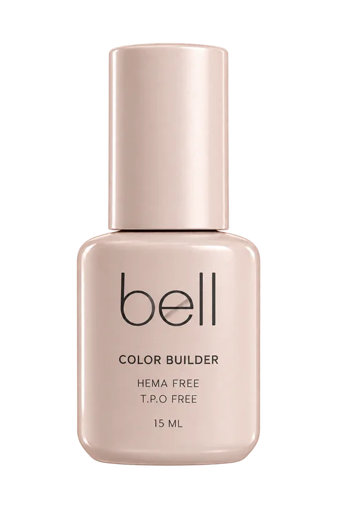
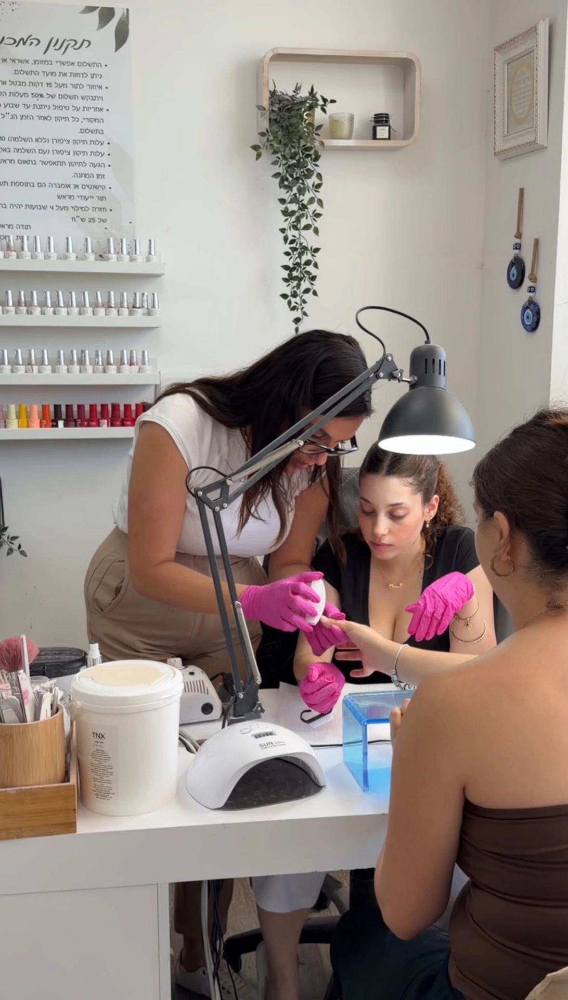
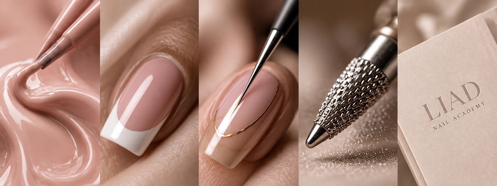
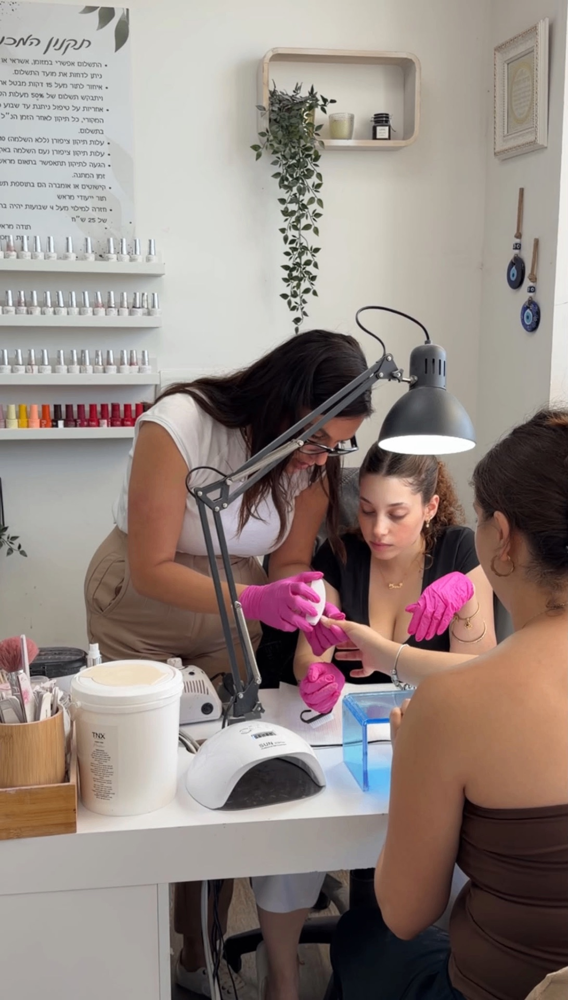
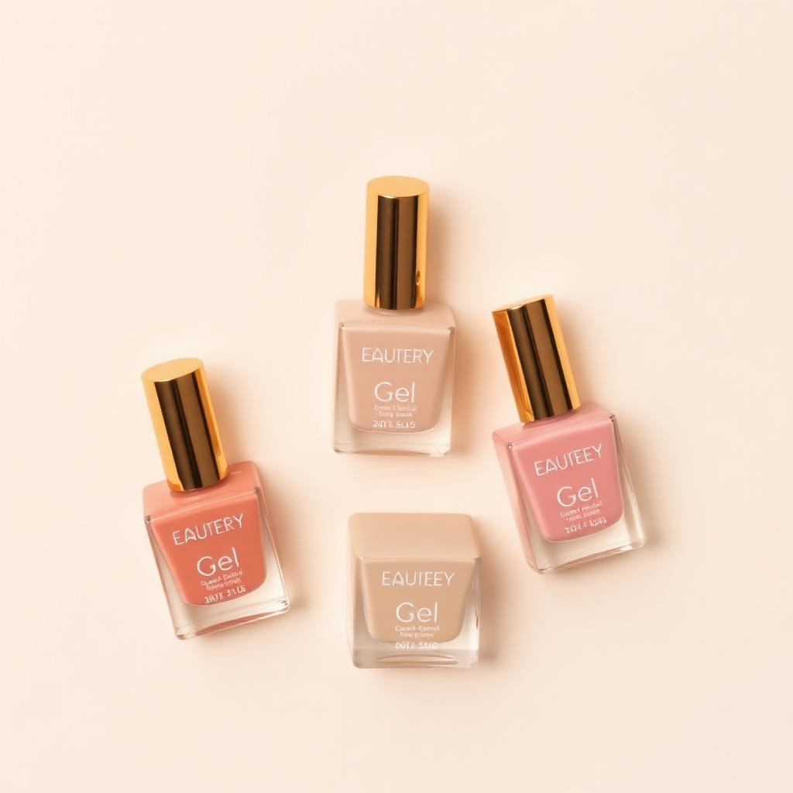
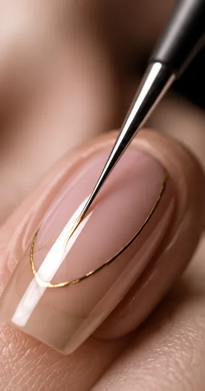
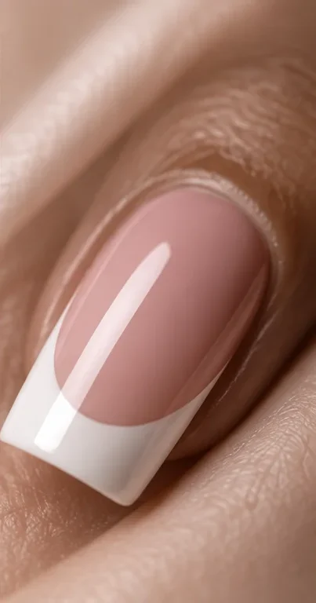

בנימינה · מתחם ״הפיל״
א׳–ה׳ 08:00–19:00 · ו׳ 08:00–12:00

BEAUTY
IN YOUR
HANDS
More
Than Just
Nails
אודות
אני ליעד, והאתגר שלי הוא הרבה יותר מציפורניים. זו דרך להעצים נשים, לגרום להן להרגיש יפות ובטוחות וליצור חוויה מדויקת, אישית ומרגשת בכל מפגש.
THE SHOP
איכות שמתבטאת בתוצאה.
TWO WORLDS · ONE BRAND
כל מה שאת צריכה, במקום אחד.
BEAUTY IN YOUR HANDS
LIAD ACADEMY · KNOW. LEARN. CREATE.
להפוך תשוקה למקצוע. קורסים פרונטליים בקבוצות קטנות, תרגול מהיום הראשון וליווי אישי לכל החיים, בשני סניפים מאובזרים במלואם.
א׳–ה׳ 08:00–19:00 · ו׳ 08:00–12:00
בתיאום מראש בלבד



האקדמיה של LIAD מלמדת בכיתת בוטיק של עד 3 תלמידות, בהדרכת מורה מוסמכת עם 15 שנות ניסיון, עם ליווי אישי ומקצועי גם אחרי הקורס.
STUDENT STORIES
מנקודת המבט של התלמידות
FROM OUR JOURNAL
המקום שבו הידיים שלך מקבלות את היחס שמגיע להן: כל גוון, כל צורה וכל פרט נבחרים כדי לשקף את הסגנון שלך.

חנות, אקדמיה וסטודיו. כל עולם נבנה כדי להבליט את מה שמיוחד בך.

לק ג׳ל, ג׳ל בנייה וכלי עבודה שנבחרו בעבודה היומיומית בסטודיו.
לחנות
עד 3 תלמידות, מורה מוסמכת וליווי אישי גם אחרי הקורס.
לקורסים
כתבות, טיפים ועדכונים על מחזורים חדשים, ישר למייל.
לכתבותטיפים מקצועיים, עדכונים על קורסים והטבות למצטרפות.